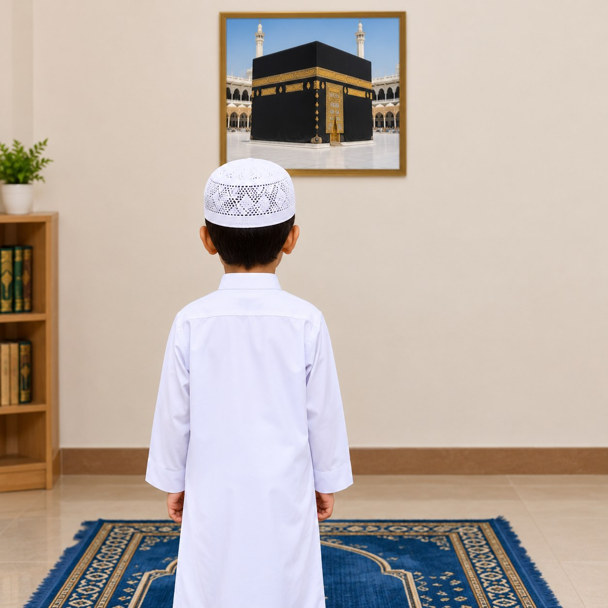
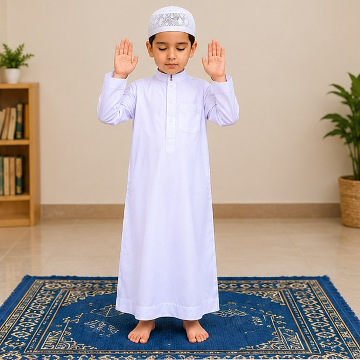
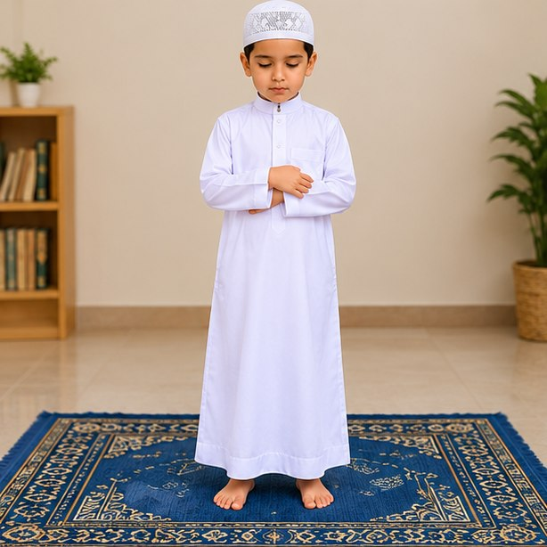
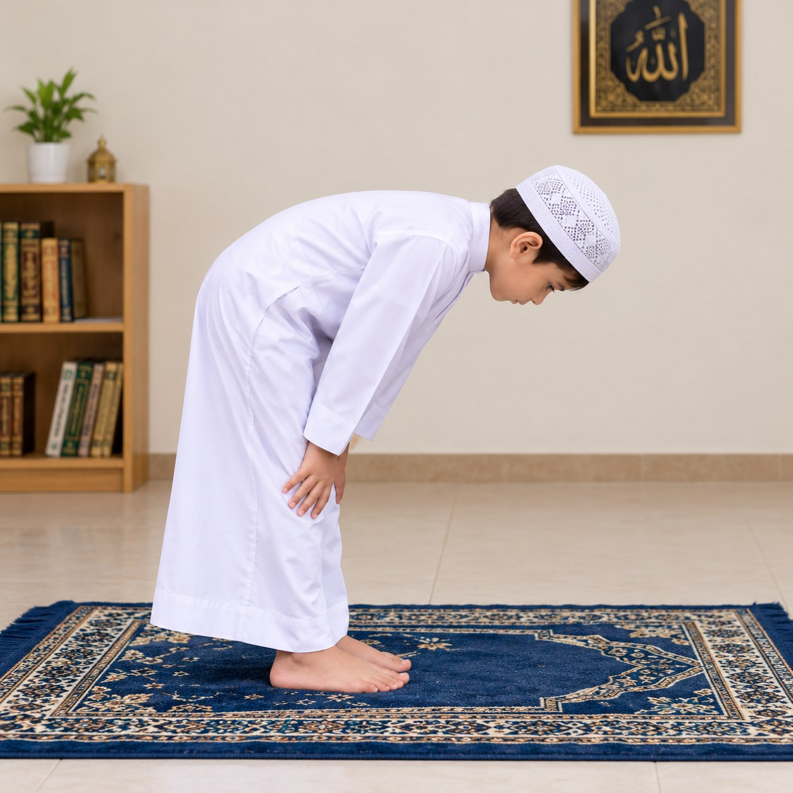
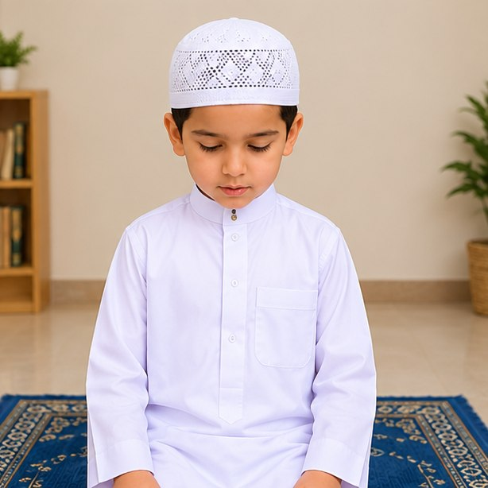
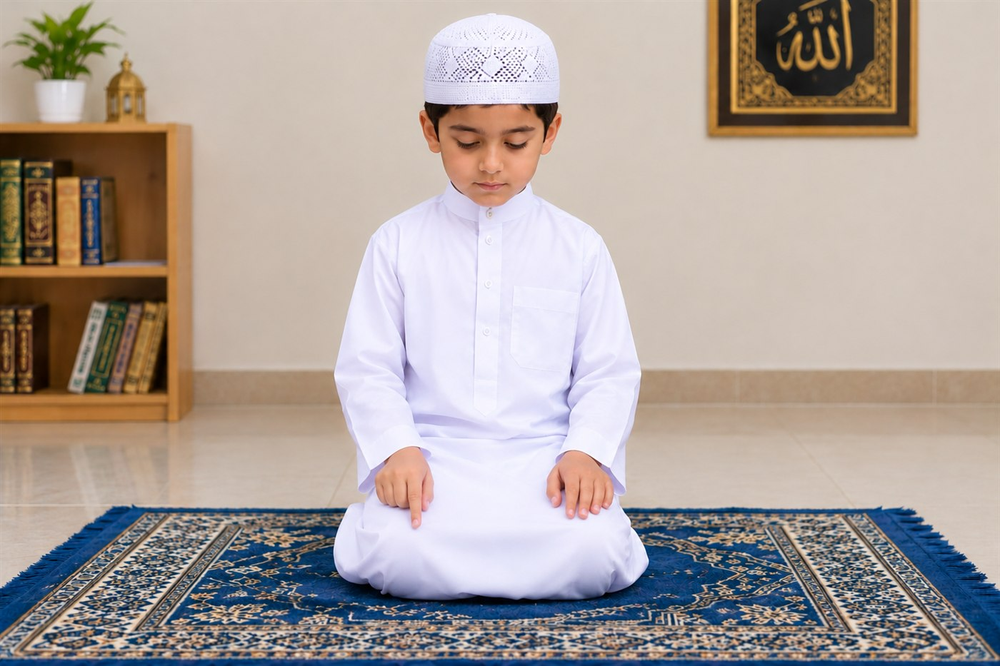
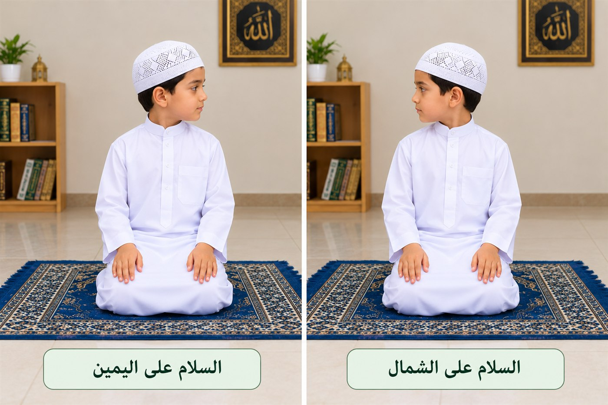

Apprendre la prière du Prophète ﷺ
Un guide simple et illustré pour les enfants, de la Takbîr d'entrée jusqu'au Salâm, en français.
Les étapes de la prière
Suivez chaque étape avec calme et présence du cœur.

Face à la Qibla
Tournez-vous vers la Qibla, restez stable, regardez l'endroit de la prosternation.

Takbîr d'entrée
Levez les mains et dites : Allahou akbar (Allah est le plus Grand).

Debout, mains croisées
Placez la main droite sur la main gauche, avec l'intention dans le cœur.

L'inclinaison (Roukou')
Dites Allahou akbar, inclinez-vous, mains sur les genoux, dos droit. Dites Soubhâna rabbiya-l-'azîm.
Se relever et se tenir droit
Dites Sami'a-llâhou liman hamidah, puis Rabbanâ wa laka-l-hamd.

La prosternation (Soujûd)
Dites Allahou akbar, prosternez-vous sur sept parties. Dites Soubhâna rabbiya-l-a'lâ.

Assis entre les deux prosternations
Levez la tête en disant Allahou akbar, asseyez-vous tranquillement. Dites Rabbi-ghfirlî.

Le Tashahhud
Asseyez-vous et récitez le Tashahhud, avec un signe de l'index.

Le Salâm
Tournez la tête à droite puis à gauche : As-salâmu 'alaykoum wa rahmatou-llâh.
Chapitres détaillés du guide
La prière est le pilier le plus important de l'islam après les deux attestations de foi. Le Prophète ﷺ a dit : « Priez comme vous m'avez vu prier ».
Conditions : l'islam, la raison, le discernement, l'entrée de l'heure, la purification (ablutions/bain/tayammoum), l'élimination des impuretés, la couverture de la nudité, l'orientation vers la Qibla et l'intention dans le cœur.
Le takbîr d'entrée (Allahou akbar) est un pilier : la prière ne commence pas sans lui. Le fidèle lève les mains, place la droite sur la gauche, puis récite une invocation d'ouverture, demande protection contre Satan, et récite Al-Fâtiha (pilier) puis Âmîn.
Après la récitation, le fidèle dit Allahou akbar, s'incline, pose les mains sur les genoux, garde le dos droit et dit Soubhâna rabbiya-l-'azîm. En se relevant : Sami'a-llâhou liman hamidah / Rabbanâ wa laka-l-hamd. Le redressement complet est un pilier.
Le fidèle dit Allahou akbar et se prosterne sur sept parties (front avec le nez, deux mains, deux genoux, extrémités des deux pieds). Formule : Soubhâna rabbiya-l-a'lâ. Entre les deux prosternations, il dit Rabbi-ghfirlî.
Le Tashahhud est un pilier. Le fidèle y fait un signe de l'index. Puis il prie sur le Prophète avec la formule abrahamique (Allahoumma salli 'alâ Mouhammad...).
Avant le Salâm, on demande protection contre quatre choses. Après le Salâm, on demande pardon trois fois (Astaghfirou-llâh), puis on dit les rappels : attestation de l'unicité, tasbîh, tahmîd, takbîr, Âyat al-Koursî et les sourates protectrices (Al-Ikhlâs, Al-Falaq, An-Nâs).
Pilier : partie constitutive sans laquelle la prière n'est pas valide (ex. takbîr d'entrée, Al-Fâtiha, Roukou', Soujûd, Tashahhud final, Salâm). Obligation : abandon délibéré = péché ; oubli compensé par la prosternation de l'oubli. Acte recommandé : récompensé si fait, non péché si omis (ex. invocation d'ouverture).